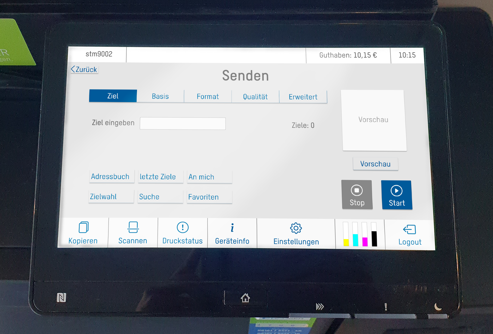
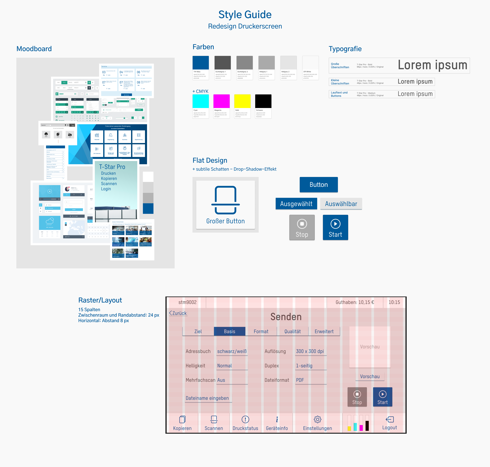

Screen Design
Printer UI
UI design for printer screens: Redesign of cluttered, confusing UI.
Analysis
The first step was analysing the old designs and, frankly, finding out what each option on the UI even
did. It turns out, not every button actually did anything.
Talking to fellow students about the printer, common sentiments expressed were “What does this even
do?”, “Nothing happens…” and “You can scroll?!” As a result, I went to try out every aspect of the
printer with classmates, asking both them and myself about what we expect to happen. I took notes of all
of my findings.
Below are excerpts from my analysis.
Sketches
The goal of these first sketches was to figure out the information architecture of
the new designs, ask questions and answer them.
I focused mainly on the most cluttered screen (see above), figuring out if fitting everything
without sacrificing UX was possible or if options could be reduced or moved.

Wireframes
These wireframes were a continuation of the previous step, further refining the information architecture
with basic design elements.
I kept focusing on the same screen because it was the most difficult to figure out. All the other
screens were then modelled after that for consistency.
Style & Moodboard
I decided to base my design and style on the CI of the university which uses these printers. The style I
would ultimately use was based on flat design. Why? I wanted to create a modern, clean and
distraction-free design, which is the exact opposite of the original design.
After deciding on a style, I researched which colours and fonts the university was using and made a
moodboard to guide my design choices.

Style Guide
Final Screens
I made the following changes compared to the original designs:
Screens “Senden” (Send) and “Scanauflösung” (Scan Resolution) separated instead of pop-ups
Screens “Ziel” (Receiver) and “Basis” (Base settings) in two tabs
Filter options on screen “Status” hidden behind button “Filter”
Final Thoughts
This being my first major UI design project, I was understandably overwhelmed at first. Especially
considering how packed the original design was.
In the end, however, I managed to make a design I am happy with while learning how to use Figma, which
has now become one of my favourite tools to use.